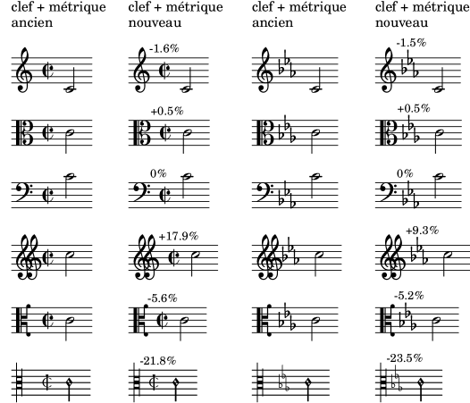

| [ << Top ] | [Top][Contents] | [ Nouveautés en matière de notation musicale >> ] |
| [ < Top ] | [ Up: Top ] | [ Notes à propos de la compilation des sources et à l’attention des empaqueteurs > ] |
Modifications majeures de LilyPond
- Les marges sont désormais plus larges, suivant ainsi les mises en pages
de nombreux éditeurs, et conformément aux recommandations d’Elaine
Gould.
Pour retrouver les mêmes réglages que précédemment, notamment dans le but de conserver la mise en page après mise à jour d’une partition à la version 2.26.0, il suffit d’ajouter le code suivant :
\paper { top-margin = 5\mm bottom-margin = 6\mm top-system-spacing.basic-distance = 1 top-markup-spacing.basic-distance = 0 left-margin = 10\mm right-margin = 10\mm inner-margin = 10\mm outer-margin = 20\mm binding-offset = 0\mm } - Au lieu de générer des sorties PostScript ou SVG par lui-même, LilyPond
peut désormais utiliser la bibliothèque Cairo pour produire ses
résultats. Il est ici fait référence au « moteur Cairo » qui peut être
activé par l’option
-dbackend-cairoen ligne de commande. Cette fonctionnalité est opérationnelle pour tous les formats de sortie (PDF, SVG, PNG, PostScript) et apporte vitesse et amélioration du rendu SVG en particulier. Néanmoins, les fonctionnalités des moteurs par défaut ne sont pas encore toutes implémentées. Sont entre autre absents le plan des PDF, l’option-dembed-source-codepour le PDF et la propriétéoutput-attributespour le SVG. - Les distances entre la clef et la métrique ainsi qu’entre la clef et
l’armure sont désormais calculées différemment. Par voie de conséquence,
on obtient un meilleur espacement pour des clefs imposantes, comme
\clef "GG", ou très fines comme\clef "petrucci-c3".L’image suivante illustre les modifications apportées aux positionnements. Le pourcentage indique la différence d’espacement entre la clef et la métrique, et entre la clef et l’armure.

Notez bien que, comme précédemment, c’est la clef la plus large d’un regroupement de portées qui détermine le positionnement horizontal de toutes les clefs d’un système. Ceci signifie, par exemple, qu’une partition pour piano comportant une clef de sol et une clef de fa ne sera en rien modifiée.
Pour retrouver les valeurs par défaut antérieures, quelle qu’en soit la raison, il suffit d’ajouter
\override Staff.Clef.space-alist.time-signature = #'(minimum-space . 3.5) \override Staff.Clef.space-alist.key-cancellation = #'(minimum-space . 3.5) \override Staff.Clef.space-alist.key-signature = #'(minimum-space . 4.2)à la partition.
- Le mode majeur LilyPond de l’éditeur de texte GNU Emacs fourni au
travers du paquetage Emacs Lisp
lilypond-mode.ela été renommé deLilyPond-modeenlilypond-mode. Le préfixe d’espace de noms est désormais tout en minuscules, passant deLilyPond-àlilypond-et, par conséquent, toutes les fonctions, variables, etc. ont toutes leur préfixe en minuscules. Ce changement est apporté pour se conformer aux conventions de nommage d’Emacs et, plus particulièrement, afin que le nom du mode corresponde au paquetage qui le fournit. Il en sera ainsi plus facile aux nouveaux utilisateurs d’utiliser LilyPond au sein d’Emacs.Ceci pourrait perturber certaines configurations d’Emacs existantes sans une simple adaptation du fichier d’initialisation d’Emacs. Voici comment, par exemple, spécifier l’utilisation du
lilypond-modeà l’aide de la macrouse-packaged’Emacs :(use-package lilypond-mode :ensure nil :mode "\\.\\(ly\\|ily\\)$")
| Notes à propos de la compilation des sources et à l’attention des empaqueteurs |
| [ << Top ] | [Top][Contents] | [ Nouveautés en matière de notation musicale >> ] |
| [ < Top ] | [ Up: Top ] | [ Notes à propos de la compilation des sources et à l’attention des empaqueteurs > ] |